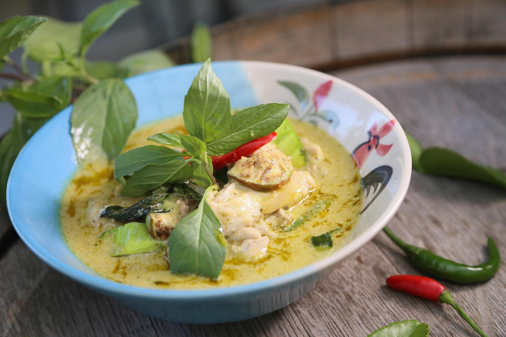

Home
Green Curry

Description
Green curry is a fairly well-known dish from Thailand—but not everyone knows how to cook it. This recipe page is a personal recipe for how I cook green curry—it may not be perfect, but it still tastes great! This recipe allows you to use either chicken or beef, it's all up to you. There's no exact measurements because in the end, cooking something like this is up to preference. So feel free to portion out the ingredients to taste!
Ingredients
- Green curry paste
- Full-fat coconut milk
- Fish sauce
- Palm sugar
- Chicken stock
- Kaffir lime leaves
- Boneless chicken thighs or thin beef slices
- Thai eggplant
- Thai chilies
Steps
- Cut the thai eggplants in half. Cut your meat of choice as well if necessary.
- Heat up a portion of the coconut milk in a saucepan and reduce it until it get very thick.
- Add the curry paste and saute for a few minutes until aromatic.
- Add your meat of choice, and stir it to mix into the paste.
- Add the rest of the coconut milk, chicken stock, palm sugar and a little bit of fish sauce to taste. Add your cut thai eggplants into it as well.
- Add the kaffir lime leaves by tearing chunks of it into the curry, making sure to discard the centre stems.
- Simmer for roughly 10 minutes or so, then bring to a boil. Shortly after coming to a boil, turn the heat off.
- Add your thai chilies into the curry and stir. Serve with white rice and enjoy!